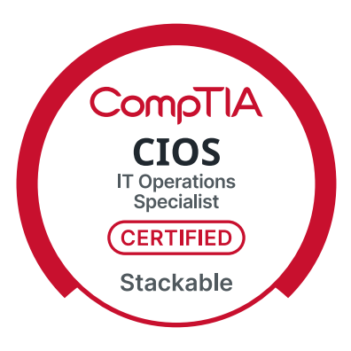

Virtualization
Proxmox VE Deployment
Deployed a dedicated virtualization platform for Windows Server, Active Directory, networking, and future lab services.
View projectIT Support Specialist • IT Administration • Networking
IT professional with hands-on experience supporting users and building Windows Server, Active Directory, hardware replacement, and network environments.
About
CompTIA IT Operations Specialist (CIOS) certified IT professional with over nine years of experience serving as the primary technology administrator for a K–12 organization supporting approximately 210 users. Experienced in Windows administration, Microsoft 365, network infrastructure, wireless networking, VoIP, endpoint support, and audiovisual systems, with a proven ability to lead technology projects, troubleshoot complex issues, and deliver excellent end-user support. Continuously expanding technical skills through industry certifications and a production-style home lab.
Featured Work
Virtualization
Deployed a dedicated virtualization platform for Windows Server, Active Directory, networking, and future lab services.
View projectWindows Infrastructure
Built the corp.home.arpa domain with AD DS, DNS, an enterprise-style OU hierarchy, security groups, and user accounts.
View projectEndpoint Administration
Deployed CLIENT01, corrected DNS configuration, joined it to the domain, and verified enterprise authentication.
View projectWindows Administration
Centralized settings, mapped drives, security restrictions, software deployment, and folder redirection through GPOs.
View projectFile and Storage
Implemented FSRM, quotas, Shadow Copies, Previous Versions, NTFS permissions, folder redirection, and ABE.
View projectCurrent Project
Documenting VLAN segmentation, managed switching, wireless deployment, secure guest networking, and firewall policy.
View projectCapabilities
Credentials
In Progress

Earned
Stackable certification earned through A+ and Network+

Earned
Networking concepts, operations, security, and troubleshooting
 assets/images/Network+-png.png
assets/images/Network+-png.png
Earned
Core 1 and Core 2
Résumé
Contact